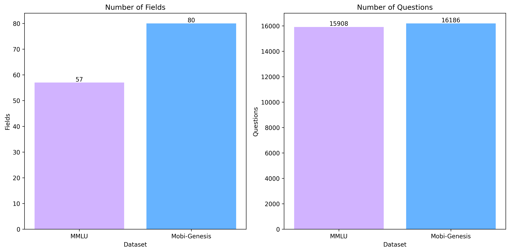

Welcome to Mobi-Genesis
Your gateway to evaluating mobile-compatible Large Language Models (LLMs) across 80 diverse fields such as Education, Healthcare, and Technology. Mobi-Genesis is redefining mobile intelligence benchmark for a smarter future.
Explore Mobi-Genesis BenchmarkMotivation
Why Apple Intelligence and Mobile Intelligence Are Important for LLMs on Mobile Devices?
-
On-Device Efficiency:
Mobile devices, such as smartphones, tablets, and wearables, have limited computational resources compared to high-end servers. Apple Intelligence and other mobile-focused AI frameworks prioritize optimization techniques to run small-scale large language models (LLMs) directly and efficiently on these constrained environments. Techniques like model compression, quantization, and efficient architectures (e.g., linear complexity models) are crucial for enabling LLMs to perform effectively on mobile devices. However, these models have limited capabilities.
-
Personalization and Privacy:
On-device LLMs can process user data locally without sending sensitive information to cloud servers. This ensures better privacy and security, a feature that aligns with Apple’s emphasis on user-centric privacy through its Apple Intelligence ecosystem. Mobile Intelligence allows models to adapt to user preferences, habits, and behaviors in real-time while safeguarding data.
-
Low Latency:
Running LLMs directly on mobile devices eliminates the need for constant internet connectivity and reduces reliance on cloud infrastructure. This enables real-time responses and faster performance, which are critical for applications such as voice assistants, augmented reality, and on-device content generation.
-
Accessibility and Ubiquity:
Mobile devices are used globally and form a significant part of everyday life. Integrating LLMs into mobile platforms broadens their accessibility, enabling users in low-bandwidth regions or offline environments to experience the benefits of AI seamlessly. Apple Intelligence exemplifies how optimized LLMs can democratize advanced capabilities for mainstream users.
Why a Mobile LLM Benchmark Is Necessary to Identify Good Mobile LLMs?
-
Performance Evaluation in Realistic Settings:
A dedicated mobile LLM benchmark is essential to evaluate models under the real-world limitations of mobile devices, such as limited memory, energy constraints, and computational power. Traditional benchmarks often target cloud-based models without accounting for these restrictions.
-
Model Comparability:
A standard benchmark allows researchers and developers to compare different LLM architectures, optimizations, and compression techniques fairly. Without such benchmarks, it is challenging to assess which models are suitable for mobile deployment.
-
Identifying Use-Specific Solutions:
Mobile devices are integral to daily life, and integrating LLMs allows for personalized, real-time experiences such as smarter virtual assistants, contextual recommendations, and language understanding for apps. Apple Intelligence, for example, enables LLMs to adapt to user behaviors, provide tailored responses, and improve applications like Siri, search, and messaging.
-
Driving Innovation:
A benchmark provides clear goals for researchers and companies to innovate further. By setting performance, efficiency, and latency baselines, it encourages the development of new algorithms, architectures, and optimization strategies tailored to mobile platforms.
-
Accuracy vs. Efficiency Trade-off:
Mobile LLMs require a balance between accuracy and resource efficiency. Benchmarks can identify the best-performing models that achieve high accuracy while maintaining fast inference times and low energy consumption on mobile hardware.
-
Improving End-User Experience:
Ultimately, a mobile LLM benchmark helps identify models that deliver the best user experience on mobile devices. This includes fluid interactions, responsiveness, and minimal battery drain, making LLM-powered features practical and usable on a large scale.
Benchmark Overview
Our dataset encompasses 80 fields,featuring a total of 16,186 questions,including scenario-based questions. Below is a subset of 6 fields showcasing the diversity of question types.
Home maintenance
Question:After installing a new dishwasher, I find that dishes aren't cleaning properly, and the appliance occasionally leaks. I've confirmed proper installation. What other issues should I consider, and how can I troubleshoot effectively?
Cooking and Recipes
Original
Question: How do I plan meals for someone with gluten intolerance?
First Aid
Question:Someone is bleeding profusely from their leg after an accident; I applied pressure but it's not stopping; should I use a tourniquet, and how?
Mental Health
Question:How can I manage anticipatory anxiety?
(1) Participating in cognitive behavioral therapy and utilizing visualization techniques are useful strategies to manage anticipatory anxiety, offering long-term benefits.
(2) Engaging in deep breathing exercises and regular yoga sessions can effectively manage anticipatory anxiety by promoting a sense of calm.
(3) Developing a routine of physical exercise and adopting a balanced diet can help manage anticipatory anxiety by improving overall mental well-being.
(4) Practicing mindfulness and relaxation techniques can help manage anticipatory anxiety.
Which of the statements given above are correct?
Basic life skills
Question:What is the best way to store spices?
Nutrition and Diet
Question:How can I reduce my intake of processed foods?
Benchmark statistics
Explore our comprehensive dataset covering 80 fields, from technical disciplines to creative domains. Gain insight into the diversity and depth of the data that drives our benchmark.
-
Our dataset covers 80 distinct fields, providing a detailed breakdown of the number of questions in each field, along with a relevance ranking from 1 to 10 that indicates the topic's suitability for mobile use cases. Each field is presented with its name, relevance score, and the corresponding number of questions.

-
This comparison highlights the differences between our dataset and the MMLU dataset. Our dataset features a greater number of questions and covers more fields, offering broader coverage and depth.
 -
This figure compares the number of topics across score ranges (1-10) between our dataset (Mobi-Genesis) and the MMLU dataset, highlighting each topic's suitability for mobile use cases.


Our Methodology
Our methodology reflects a rigorous and systematic approach, designed to ensure not only quality but also practicality for mobile-based applications. By leveraging detailed planning and execution strategies, we aim to provide benchmark that resonate with real-world use cases. Every step has been designed and reviewed to uphold the highest standards of relevance, reliability, and scalability.

Our methodology is a detailed, multi-step process designed to ensure comprehensive and reliable benchmarks:
- Field Selection: We began by conducting an in-depth search to identify fields that people frequently need or use in daily life, work, shopping, gaming, travel, or other scenarios. These fields were designed to align with mobile searches and user queries. These fields were gathered from diverse sources including Wikipedia, various websites, and large language models to ensure inclusivity and relevance.
- Question Structuring and Human Annotation:
- The questions included standard questions to evaluate general knowledge and understanding, and challenging scenario-based questions crafted to simulate real-world situations and test critical thinking skills.
- The questions underwent multiple rounds of human annotation. This included generating the ground truth answers first and then creating multiple-choice questions (MCQs) based on the ground truth. The MCQs were crafted with the following principles:
- Options were highly similar to the ground truth, differing only in specific keywords or subtle details to make them incorrect.
- On average, MCQs were longer than the ground truth answers to test model precision.
- Some questions included multiple correct answers for added complexity.
- Quality Assurance: The generated questions were thoroughly reviewed for similarity and uniqueness. Any redundant or overly similar questions were removed. Additionally, each batch of questions underwent sampling and human verification to ensure accuracy and relevance.
- Evaluation on LLMs: The curated dataset was used to evaluate various large language models across different scales, focusing particularly on those optimized for mobile usage. Evaluation metrics included latency, accuracy, and energy efficiency to ensure the benchmarks were practical for mobile environments.
This meticulous process ensures that our benchmarks are not only comprehensive but also reflective of real-world mobile usage scenarios.
Benchmark Results
Discover the latest results from our interactive visualizations, comparing LLMs on performance, accuracy, and efficiency. Dive deep into the metrics and make informed decisions about the future of mobile intelligence.